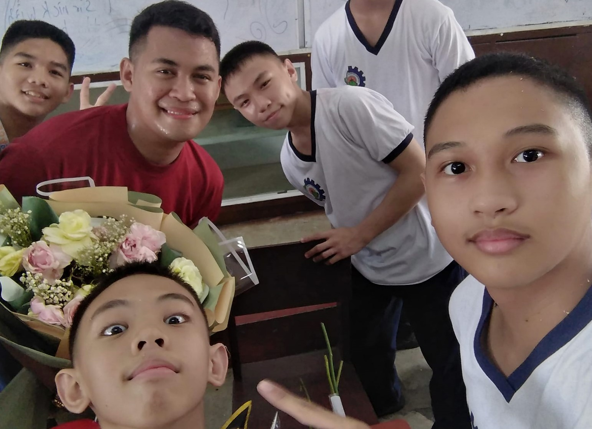

This is my story
My school is Don Bosco Technical College in Punta Pincesa Cebu City. I have met so many wonderful people in this school. Even since 2019, I have enjoyed my time in school even when there was a pandemic happening. In my own words, Don Bosco is the best thing that has happened to me.

Made by Russell Labaya